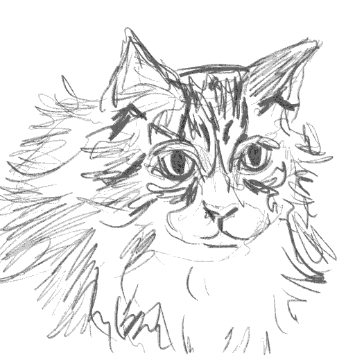
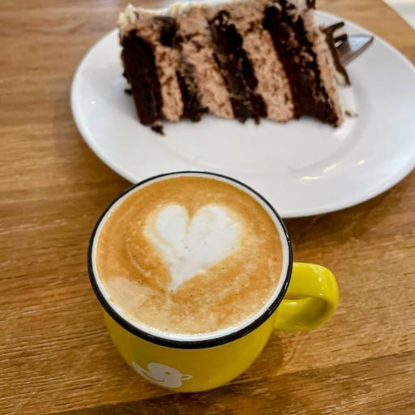
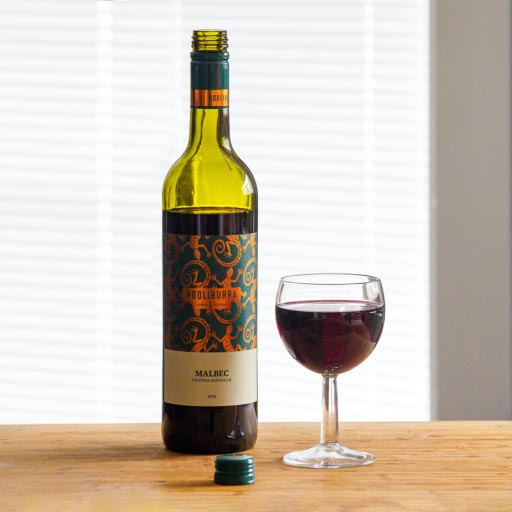
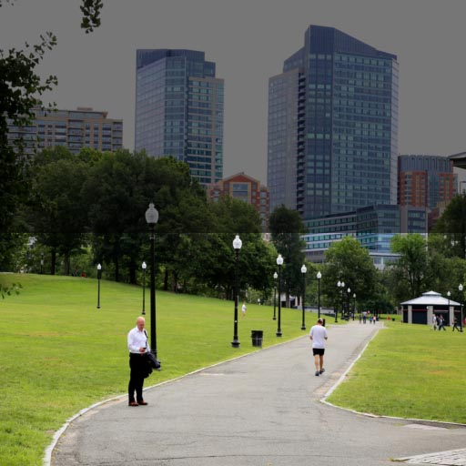
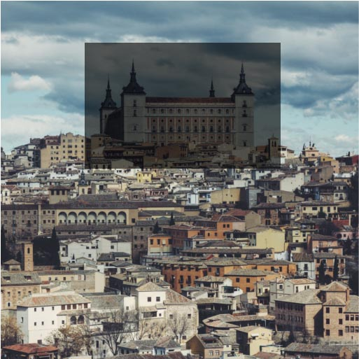
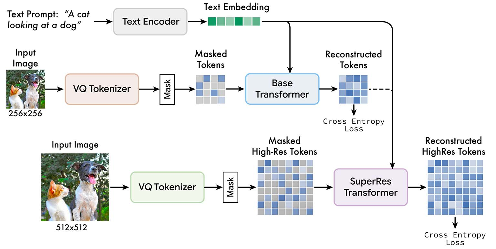

A birthday cake with the word "Muse" written on it.
A fireplace where the flames spell "Muse".
Muse: Text-To-Image Generation via Masked Generative Transformers
Huiwen Chang*, Han Zhang*, Jarred Barber†, AJ Maschinot†, José Lezama, Lu Jiang, Ming-Hsuan Yang, Kevin Murphy, William T. Freeman, Michael Rubinstein†, Yuanzhen Li†, Dilip Krishnan†
*Equal contribution. †Core contribution.
Muse is a fast, state-of-the-art text-to-image generation and editing model.
We present Muse, a text-to-image Transformer model that achieves state-of-the-art image generation performance while being significantly more efficient than diffusion or autoregressive models. Muse is trained on a masked modeling task in discrete token space: given the text embedding extracted from a pre-trained large language model (LLM), Muse is trained to predict randomly masked image tokens. Compared to pixel-space diffusion models, such as Imagen and DALL-E 2, Muse is significantly more efficient due to the use of discrete tokens and requiring fewer sampling iterations; compared to autoregressive models, such as Parti, Muse is more efficient due to the use of parallel decoding. The use of a pre-trained LLM enables fine-grained language understanding, translating to high-fidelity image generation and the understanding of visual concepts such as objects, their spatial relationships, pose, cardinality, etc. Our 900M parameter model achieves a new SOTA on CC3M, with an FID score of 6.06. The Muse 3B parameter model achieves an FID of 7.88 on zero-shot COCO evaluation, along with a CLIP score of 0.32. Muse also directly enables a number of image editing applications without the need to fine-tune or invert the model: inpainting, outpainting, and mask-free editing.
Text-to-image Generation
Our model generates high-quality images from text prompts fast (1.3s for 512x512 resolution or 0.5s for 256x256 resolution on TPUv4).
An abstract, flowery painting
.
A shallow focus photography of a lamb in a wine glass.
A cake made of macarons in a heart shape.
A cake made of macarons in a heart shape.
A tilt shift macro shot of a tiny Christmas town
A cake made of macarons in a heart shape.
An abstract, flowery painting
.
A shallow focus photography of a lamb in a wine glass.
.
.
A tilt shift macro shot of a tiny Christmas town
A cake made of macarons in a heart shape.
Zero-shot, Mask-free editing
Our model gives us zero-shot, mask-free editing for free by iteratively resampling image tokens conditioned on a text prompt.
Original "A cat wearing a tie." "A dog." "A pig." "A shiba inu." "A rabbit." "A raccoon." "A tiger." "An owl."

Mask-free editing controls multiple objects in an image using only a text prompt.
A croissant next to a latte with a flower latte art.
Original

Edited
A bottle of Pinot Grigio next to a glass of white wine and a cork.
Original

Edited
Zero-shot Inpainting/Outpainting
Our model gives us mask-based editing (inpainting/outpainting) for free: mask-based editing is equivalent to generation.
Original (with mask) "New York in the background" "Paris in the background" "San Francisco in the background"

Hot air balloons.
Original (+mask)

Edited
Beautiful fall foliage; the gazebo is on a lake
Original (+mask)
Edited
Model details

Muse training pipeline. We feed low resolution and high resolution images into two independent VQGAN tokenizer networks. These tokens are then masked, and low resolution ("base") and high resolution ("superres") transformers are trained to predict masked tokens, conditioned on unmasked tokens and T5 text embeddings.
Contributions
We present a state-of-the-art model for text-to-image generation which achieves excellent FID and CLIP scores, which quantitatively measure image generation quality, diversity and alignment with text prompts.
Our model is significantly faster than other comparable models due to the use of a compressed, discrete latent space and parallel decoding.
Our architecture enables out-of-the-box zero-shot capabilities such as inpainting, outpainting, and mask-free image editing.
Muse improves inference time over other models.
* Stable Diffusion times represent the best reported inference times and were not measured internally. The configuration used to achieve FID of 12.63 uses 5x more diffusion steps than what was used for benchmarking, roughly equivalent to 18.5s sampling time.
Model
Resolution
Inference Time (↓)
Stable Diffusion 1.4*
512x512
3.7s
Parti-3B
256x256
6.4s
Imagen
256x256
9.1s
Imagen
1024x1024
13.3s
Muse-3B
256x256
0.5s
Muse-3B
512x512
1.3s
FID (quality/diversity) and CLIP (text-image alignment) scores measured on zero-shot COCO.
Model
FID (↓)
CLIP (↑)
Stable Diffusion 1.4
12.63
-
Parti-3B
8.10
-
Imagen
7.27
0.27
Muse-3B
7.88
0.32
Special Thanks
We thank William Chan, Chitwan Saharia, and Mohammad Norouzi for providing us training datasets, various evaluation codes, website templates and generous suggestions. Jay Yagnik, Rahul Sukthankar, Tom Duerig and David Salesin provided enthusiastic support of this project for which we are grateful. We thank Victor Gomes and Erica Moreira for infrastructure support, Jing Yu Koh and Jason Baldridge for dataset, model and evaluation discussions and feedback on the paper, Mike Krainin for model speedup discussions, JD Velasquez for discussions and insights, Sarah Laszlo, Kathy Meier-Hellstern, and Rachel Stigler for assisting us with the publication process, Andrew Bunner, Jordi Pont-Tuset, and Shai Noy for help on internal demos, David Fleet, Saurabh Saxena, Jiahui Yu, and Jason Baldridge for sharing Imagen and Parti speed metrics.